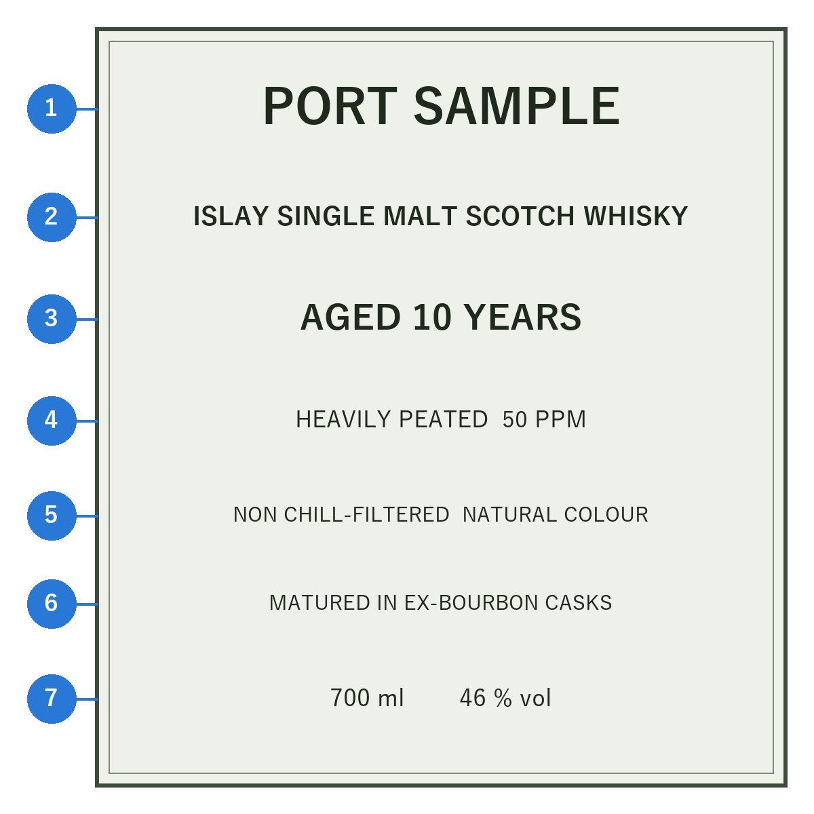

第 11 章 選び方
本章では、アイラウイスキーを初めて選ぶ人のために、入門の順番、ラベルの読み方、製品の種類による違い、購入後の保管方法を説明する。
入門の順番
アイラウイスキーは個性が強いため、いきなり最も強いものを選ぶと、苦手意識を持ってしまうことがある。穏やかなものから強いものへ、段階的に進むのがよい。進み方の例を図 9に示す。
図 9 アイラウイスキーの入門の順番の例
- 第 1 段階：中程度のスモーキーさ
ボウモア 12 年は、煙と果実の香りのバランスがよく、アイラの入門として勧められることが多い。
- 第 2 段階：強いスモーキーさ
カリラ 12 年は、スモーキーさは強いが口当たりが軽く、ハイボールにしても飲みやすいため、この段階の最初に向く。ラフロイグ 10 年は、薬品のような強烈な個性を持つ、アイラを象徴する一本である。ラガヴーリン 16 年は、深い煙と甘さが溶け合った重厚な味わいで、ゆっくり味わうのに向く。この 2 本を飲み比べると、同じ「強いスモーキーさ」でも質が大きく違うことが分かる。
- 第 3 段階：非常に強いスモーキーさ
アードベッグ 10 年は、強烈な煙と爽やかな甘さを併せ持つ。キルホーマン マキヤーベイは、若々しく鮮やかな煙が特徴である。
- 第 4 段階：極めて強いスモーキーさ
オクトモアは、ほかに類のない強烈な煙を持つ。度数も高く価格も高いため、バーで 1 杯試してから購入するとよい。
スモーキーさが合わないと感じた場合は、ピートを焚かないブナハーブン 12 年や、ブルックラディ ザ・クラシック・ラディを試すとよい。アイラ島の土地の個性を、煙なしで味わえる。
ラベルの読み方
ラベルには、製品を選ぶための多くの情報が書かれている。架空のラベルの例を図 10に、各項目の意味を表 19に示す。


図 10 ラベルの例（架空の製品）
番号 |
表示 |
意味 |
|---|---|---|
1 |
製品名・蒸留所名 |
多くの場合、蒸留所の名前が製品名になる。 |
2 |
ISLAY SINGLE MALT SCOTCH WHISKY |
アイラ島の 1 つの蒸留所で造られたシングルモルトのスコッチウイスキーであることを示す。 |
3 |
AGED 10 YEARS |
熟成年数。中身に含まれる原酒のうち、最も若いものの熟成年数を示す。熟成年数を表示しない製品（NAS）もある。 |
4 |
HEAVILY PEATED 50 PPM |
ピートの強さ。フェノール値を表示する製品は一部に限られる。「HEAVILY PEATED（強くピートを焚いた）」のような言葉だけの場合もある。 |
5 |
NON CHILL-FILTERED、NATURAL COLOUR |
冷却ろ過をしていないこと（ノンチルフィルター）、着色していないことを示す。 |
6 |
MATURED IN EX-BOURBON CASKS |
熟成に使った樽の種類。この例ではバーボン樽（第 6 章 製法の特徴）。 |
7 |
700 ml、46 % vol |
容量とアルコール度数。 |
- 熟成年数
熟成年数が長いほど価格は高くなるが、「長いほどよい」わけではない。アイラウイスキーでは、若いものほど煙が力強く、長く熟成したものほど煙が穏やかになる傾向がある（第 6 章 製法の特徴）。煙の力強さを楽しみたいなら、若いものを選ぶのもよい。
- 熟成年数を表示しない製品（NAS）
熟成年数を表示しない製品は、若い原酒と熟成した原酒を自由に組み合わせて造られる。アードベッグ ウーガダールやキルホーマン マキヤーベイのように、熟成年数がなくても評価の高い製品は多い。
- 冷却ろ過と着色
多くのウイスキーは、冷やしたときに濁らないように、瓶詰め前に冷やしてろ過する（冷却ろ過）。ろ過をしないと、低温や加水で白く濁ることがあるが、香りや口当たりの成分がより多く残るとされる。また、色をそろえるためにカラメル色素を加える製品もある。これらは品質の良し悪しを直接示すものではないが、冷却ろ過や着色をしていないことを、こだわりの表れとしてラベルに表示する蒸留所も多い。
- アルコール度数
多くの製品は 40〜46 % である。樽から出したままの度数で瓶詰めしたカスクストレングスは 50〜60 % 台になることが多く、加水して好みの濃さで楽しめる（第 10 章 飲み方）。
オフィシャルボトルとボトラーズ
ウイスキーの製品には、誰が瓶詰めしたかによって 2 つの種類がある。
- オフィシャルボトル
蒸留所（またはその所有企業）が自ら瓶詰めした製品。蒸留所の味の基準となるもので、定番品は品質が安定しており、手に入りやすい。初めての一本はオフィシャルボトルの定番品から選ぶのがよい。
- ボトラーズ
蒸留所から原酒の樽を買い取り、独自に熟成・瓶詰めする業者（独立瓶詰め業者）と、その製品。1 つの樽だけを瓶詰めした製品（シングルカスク）など、オフィシャルボトルにはない個性的な製品が多い。同じ蒸留所でも、樽によって香味は大きく違う。
ボトラーズの製品には、契約上の理由などから、蒸留所名を明かさずに「アイラのシングルモルト」としてだけ表示されるものもある。どの蒸留所のものかを推理しながら飲むのも、ボトラーズの楽しみ方の 1 つである。
価格の目安
価格は変動が大きいため、本書では具体的な金額は示さないが、おおよそ次のような傾向がある。
手頃：各蒸留所の 10〜12 年程度の定番品や、熟成年数を表示しない定番品。最初の一本に向く。
やや高価：15〜18 年程度の熟成品や、カスクストレングスの製品、限定品。
高価：熟成年数の長いものや、オクトモア、閉鎖された蒸留所の原酒を使った製品。ポートエレンの閉鎖前の原酒は非常に高価である。
いきなりボトルを買うのが不安な場合は、バーで 1 杯ずつ試したり、小さなボトル（ミニチュアボトル）や飲み比べセットを利用したりするとよい。
限定品の考え方
アイラの蒸留所は、毎年のように限定品を発売する。限定品は数が少なく、人気のものはすぐに売り切れ、価格が上がることもある。
まずは定番品で蒸留所の基本の味を知り、そのうえで、好きな蒸留所の限定品を試すのがよい。基本の味を知っていると、限定品のどこが違うのかを楽しめる。
開栓後の保管
ウイスキーは、開栓前であれば瓶の中でほとんど変化しない。開栓後は、次の点に注意して保管する。
立てて保管する：コルク栓の瓶を寝かせると、強いアルコールでコルクが傷むことがある。
光と高温を避ける：直射日光や高温は香味を損なう。冷暗所に置く。
栓をしっかり閉める：空気に触れると、香りが少しずつ変化し、抜けていく。
残りが少なくなったら早めに飲む：瓶の中の空気が多くなると、変化が早く進む。小さな瓶に移し替えるのも 1 つの方法である。
開栓後に長い期間を置くと、スモーキーさが弱まったと感じることもある。開栓後は、半年から 1 年程度を目安に飲み切るとよい。